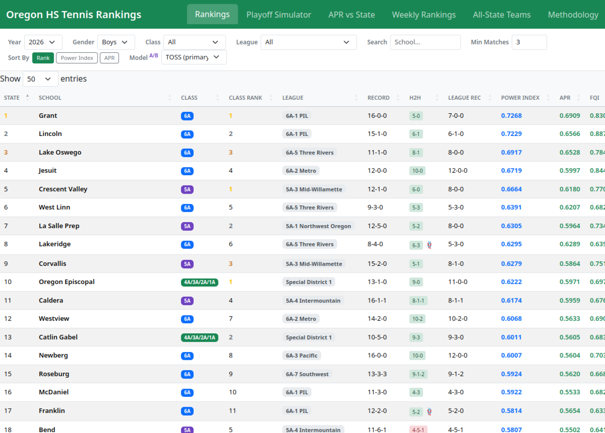

Oregon HS Tennis Power Rankings
The first power ranking for Oregon high school tennis teams. I designed the formula, built the entire site, and put it online on live statewide data. Teams across Oregon used it as a reference all through the 2026 season.

Four years of statewide results, four rating models I designed, a playoff simulator, and a set of live tournament tools, all generated from raw match data and served as one static site.
I worked on this in the open. Back in an April 2025 writeup I shared an early version of the formula and the thinking behind it, the proof of concept that the live system grew out of.
It’s also the data behind an institutional change: the analysis that supported Oregon’s adoption of a dual team tennis championship. The format is now on the calendar: power-ranking-seeded brackets debuting in spring 2027, with 12 teams at 6A and 8 at 5A and 4A-1A, per gender, higher seed hosting through to a final at the state championship site.
The long game
Alongside the tools came six years of persuading the OSAA to change how it runs the sport.
- 2019
- Oregon’s high school tennis program has no team championship.
- 2020 to 2021
- The case goes public in writing: split the seasons, raise the match limit, add a power-ranking-seeded team tournament.
- early 2020s
- Concerns about scheduling, travel, and roster viability get worked through with the OSAA. The argument needs data.
- Dec 2025
- After refining the rating model through earlier prototypes, I build the full site and put it online on live statewide data.
- 2026
- The rankings run live all season, used by teams across the state. The OSAA State Championship Committee recommends the format, and the OSAA adopts it for the next four-year block.
- 2027
- The first dual team championships are played.
Once the questions turned concrete (who qualifies, how do you seed it, what does it cost in travel) the answers were already computed and public.
The problem it models
A tennis dual meet is eight concurrent matches, four singles and four doubles, and the team that wins five flights wins the meet. That structure breaks ordinary ranking. A 5-3 win at the bottom of the lineup looks identical to a 5-3 win at the top, win-loss records skip over who you played, and lineups can be “stacked” to game any naive metric.
Central data was sparse, and existing ratings handled none of this. I had to define the measurement before building ingestion, rating models, simulation, and the public tools on top of it. It also has to absorb forfeits, ties, six-flight meets, classification changes, and dirty source data.
The models
APR: Adjusted Power Rating
RPI-style strength of schedule, aligned with what the OSAA already uses: your wins matter, your opponents’ more, theirs too. “How good are you, given who you played?”
FWS: Flight-Weighted Score
Scores all eight flights on a weighted curve (1st singles / doubles = 1.00 down to 4th doubles = 0.10, max 3.95). The top of the lineup drives the number, but depth still counts: a 7-1 sweep outscores a 5-3 win with the same top flights, which makes stacking pointless. Normalized for flights actually contested, so a six-flight meet still produces a clean number.
FWS+
FWS made legible, indexed like baseball’s ERA+. 100 is exactly average for the classification; 115 is 15% above. It recalibrates as the season fills in, so a team’s standing reads in real time and across history.
Power Index
The blend: (APR × 0.50) + (FWS × 0.50). It combines opponent quality and flight dominance in one number.
TOSS
A later model folding in game-share margin. A/B-tested against the Power Index with results reported.
H2H engine
When teams are close, head-to-head breaks the tie, but only when it avoids a rock-paper-scissors loop (A beats B beats C beats A). Split series defer to the metrics.
On the site
The site grew from an All-State archive into a public suite of tools.
- Rankings dashboard. Every team rated by all four models, filterable by year, classification, and league.
- Playoff simulator. What-if brackets, with a regional mode that optimizes travel against competitive integrity.
- Comparison view. Head-to-head and model-vs-model, plus rating-vs-actual results, showing how well dual-meet strength predicts the individual tournament.
- Methodology. The Power Index explained in plain language, so the rankings are auditable.
- Weekly in-season rankings. Snapshots, week by week, live.
- All-State archive. Teams from 2022 to 2025 in one place.
- Bracket tools. A permutation explorer and a fair-bracket generator that stress-test how different seedings actually play out.
- SD1 draw suite. A live seeding board, draw tool, and printable / live brackets built to run an actual special-district tournament in the room, on the day, with cloud-saved state.
- 2027 format tools. A mixed-doubles standby-list tool and the dual team finals format, matching the adopted bracket structure and seeding.
- Changelog and after-action reports. What changed, what was tested, what was learned.
Stack & method
- Generation
- A single Python program computes every model and emits one self-contained
index.htmlwith the data embedded. - Geocoding
- Nominatim / OpenStreetMap, geocoded once and cached so fresh clones skip the network. Powers the simulator’s travel optimization.
- Frontend
- Vanilla JS + Bootstrap + DataTables over embedded JSON. React / TypeScript / Vite in the original prototype.
- Live tooling
- Netlify Functions (v2) + Netlify Blobs for the cloud-saved SD1 draw.
- Hosting
- Netlify. Static, zero-infrastructure, offline-capable.
- Data
- ~1,200 team-seasons, every flight, 2021 to present, straight from the OSAA source API.
Design decisions
Static HTML with embedded JSON serves coaches and athletic directors, who need something fast, free, and saveable. A dataset this size belongs in the page. The model exposes raw, intuitive scores (0 to 3.95 FWS, ERA+-style FWS+) up front and keeps the normalized math underneath.
The design work went into the model: a rating design that makes stacking pointless, tiebreaker logic that refuses circular results, travel optimization that protects top seeds while cutting miles for the rest, and a methodology published in full so the numbers carry their own evidence.
The model had to be transparent enough for an institution to trust, which meant keeping it running in public until the OSAA said yes.